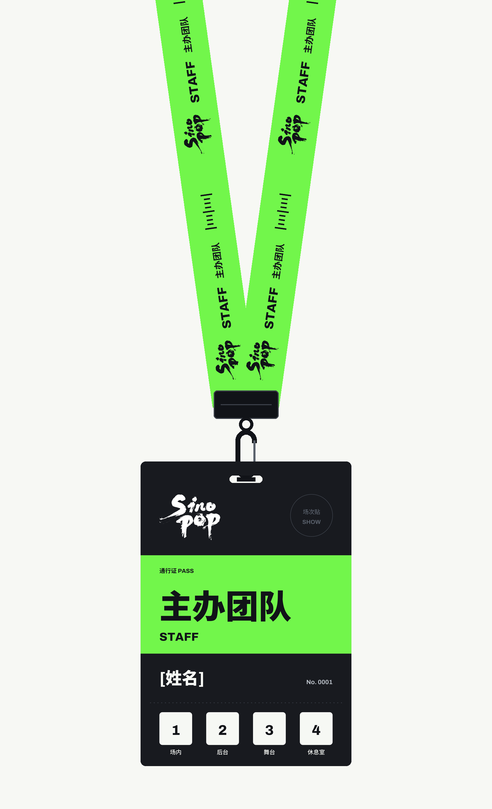
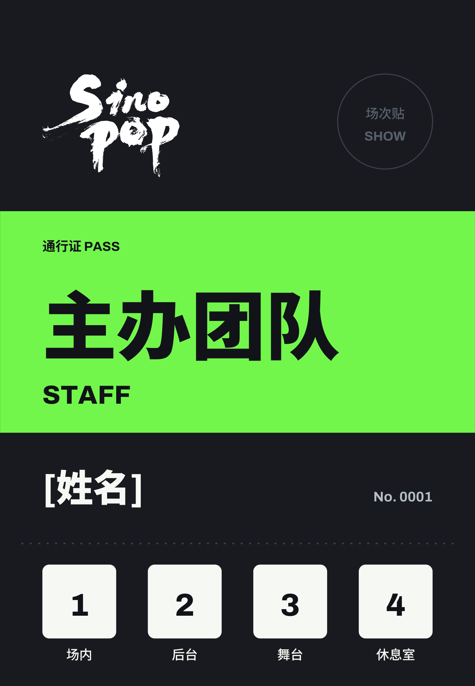
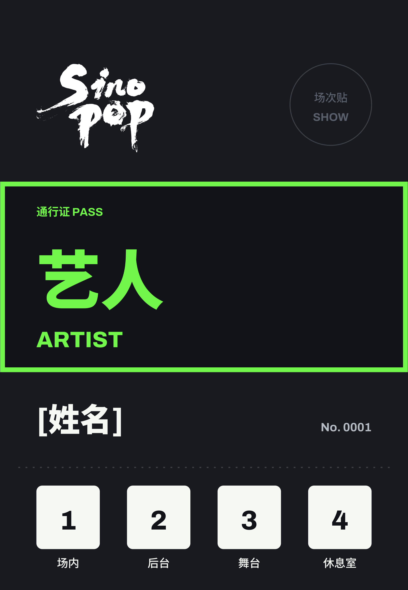
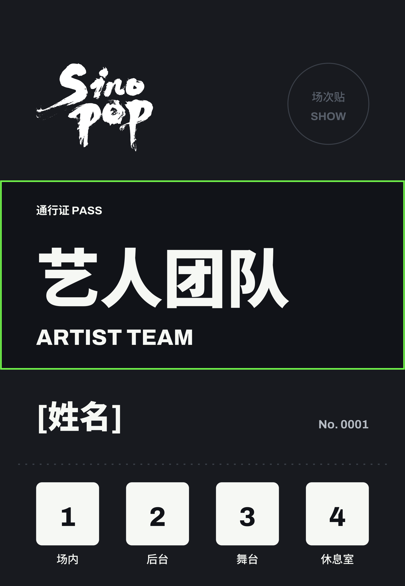
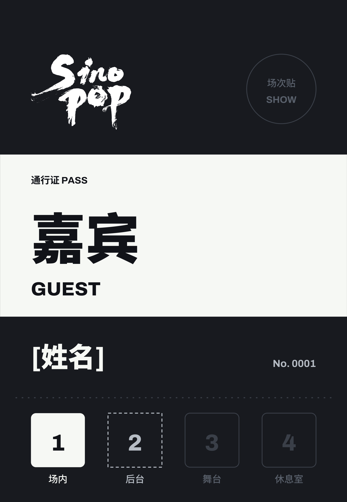
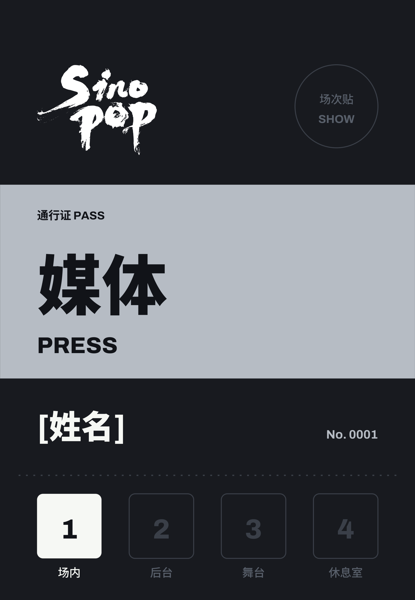
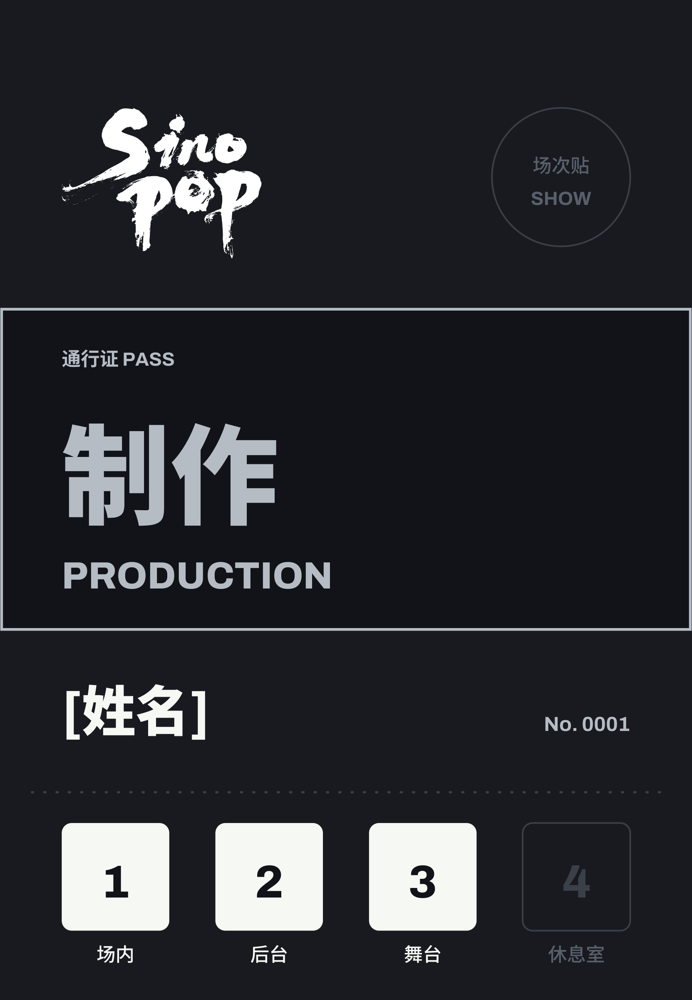
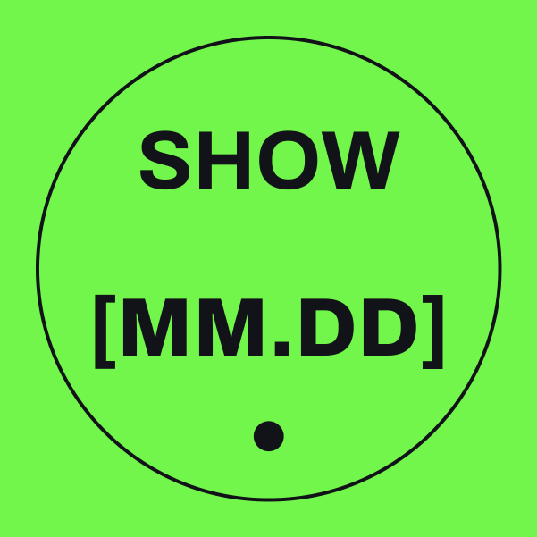
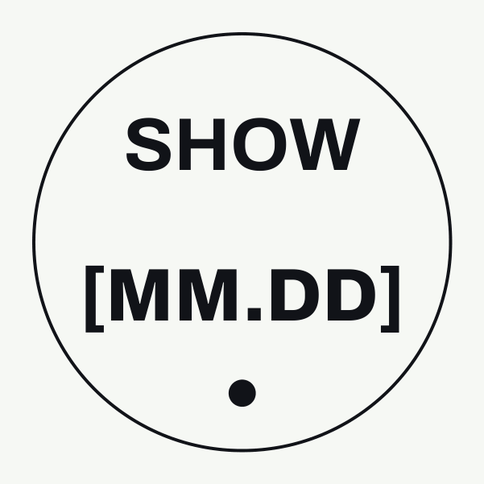

| 品名 | 款数 | 说明 |
|---|---|---|
| A · PVC 工牌 | 6 款身份 | 90 × 130 mm，双面印，姓名与编号逐张不同（可变数据） |
| B · 场次贴 | 2 色 | Ø 16 mm 易碎贴，每场演出单独印日期，贴在工牌右上圆圈里 |
| C · 挂绳 | 4 色 | 20 mm 宽，展开 900 mm，双面丝印，颈后安全扣 |
| D · 五金 | 1 套 / 根 | 哑黑金属夹片 + 圆环 + 哑黑龙虾扣，出厂前装好 |
| 主办团队 STAFF | 荧光绿挂绳 |
|---|---|
| 艺人 / 艺人团队 | 黑色挂绳（白标 + 荧光绿字） |
| 嘉宾 GUEST | 白色挂绳 |
| 媒体 / 制作 | 浅灰挂绳 |






正面 6 款：主办团队 · 艺人 · 艺人团队 · 嘉宾 · 媒体 · 制作。反面 6 款相同（通行区域说明 + 佩戴须知），只有编号不同。
| 成品尺寸 | 90 × 130 mm，竖版，四角圆角 R 2.1 mm |
|---|---|
| 材质 / 厚度 | PVC 白芯卡，0.76 mm（标准卡厚） |
| 表面 | 双面哑面（磨砂），不要亮面：舞台灯下不反光，拍照不出白斑 |
| 印刷 | 双面印刷：CMYK 四色 + 1 个荧光绿专色（文件里的专色名叫 SP-GREEN）。 深色底是印出来的，白字和白色标志是留白露出白芯，不需要白墨。 |
| 挂孔 | 长圆孔 14 × 3 mm，左右居中，孔上沿距卡顶 6 mm（见 pass-technical.pdf） |
| 可变数据 | 姓名、编号每张不同。按 passes-batch-print.pdf 逐页印：第 1 页正面、第 2 页反面，一人一组，依次往后。 |
| 空白备用证 | 姓名处只有一条细线的是备用证，现场用白色油漆笔手写，照常印。 |
| 出血 / 裁切 | 文件四边已含 3 mm 出血和裁切线；虚线「撕票线」只是印刷图案，不要打点线、不要模切。 |
| 不可改动 | 不缩放、不改字、不换字体（文件里字体已嵌入）、不调色 |


| 尺寸 / 形状 | Ø 16 mm 圆形模切，出血 1.5 mm |
|---|---|
| 材质 | 易碎纸不干胶（撕下就碎，不能转贴到别的证上），哑面 |
| 颜色 | 单数场次荧光绿底、双数场次白底，黑字 |
| 内容 | 每场演出单独出一版日期，文件由我方每场提供；整张排版由贵方安排 |
| 夹片（压片） | 哑黑金属，20 mm 宽，把挂绳两端压在一起 |
|---|---|
| 圆环 | 哑黑，约 Ø 10 mm，连接夹片和龙虾扣 |
| 龙虾扣 | 哑黑锌合金（哑黑烤漆或枪黑电镀），长约 30 mm，直接扣进工牌挂孔 |
| 颈后安全扣 | 黑色塑料安全扣，装在挂绳正中（后颈位置），被用力拉扯时自动分开，防止勒颈 |
| 统一要求 | 4 种颜色挂绳的五金全部用哑黑，不要银色、金色、亮面 |
展开图（900 × 20 mm），下面两条是左端 200 mm 放大。从上到下：主办团队 · 艺人方 · 嘉宾 · 媒体 / 制作。两面印同一张图。
| 织带 | 涤纶平纹织带（光面，印字清楚），宽 20 mm，厚约 1 mm，手感软、边不起毛 |
|---|---|
| 长度 | 展开 900 mm（±10 mm），戴上后单边约 450 mm |
| 织带颜色 |
荧光绿（对色 #73F64B）
黑（#111318） 白（#F7F8F4，干净白，不要米黄） 浅灰（#B7BDC5，冷灰，不要偏蓝或偏暖） |
| 印刷 | 双面丝网印刷。绿、白、灰绳：黑色单色印。黑绳：双色，标志印白色，字和刻度印荧光绿。 |
| 不印字的区域 | 两端各 15 mm（夹片位置）+ 正中 50 mm（安全扣位置），文件里已留空 |
| 标志细节 | 毛笔字边缘有细小飞白。如果丝印保不住细节，请先告诉我们，改用热转印打样比较，不要自己加粗或重描。 |
| 品名 | 款式 | 数量 | 文件 |
|---|---|---|---|
| PVC 工牌 | 按名单（6 种身份混合） | 待确认 To be confirmed | passes-batch-print.pdf |
| PVC 工牌 · 空白备用证 | 每种身份 | 待确认 | 同上（名单中写 BLANK 的页） |
| 挂绳 · 荧光绿 | 主办团队 | 待确认 | lanyard-staff-print.pdf |
| 挂绳 · 黑 | 艺人 + 艺人团队 | 待确认 | lanyard-artist-print.pdf |
| 挂绳 · 白 | 嘉宾 | 待确认 | lanyard-guest-print.pdf |
| 挂绳 · 浅灰 | 媒体 + 制作 | 待确认 | lanyard-press-production-print.pdf |
| 场次贴 | 每场一版 | 待确认 | 每场单独提供 |
建议：挂绳每色多做约 10% 备用；场次贴按当场工牌数 + 10%。
| *-print.pdf | 印刷用：CMYK + 荧光绿专色 SP-GREEN，带出血和裁切线 |
|---|---|
| *-rgb.pdf | 看稿、对色参考，不用于印刷 |
| *-technical.pdf | 刀模、挂孔、装配位置，只做参考线，不印在成品上 |
| *.svg / *-preview.png | 源文件和预览图 |